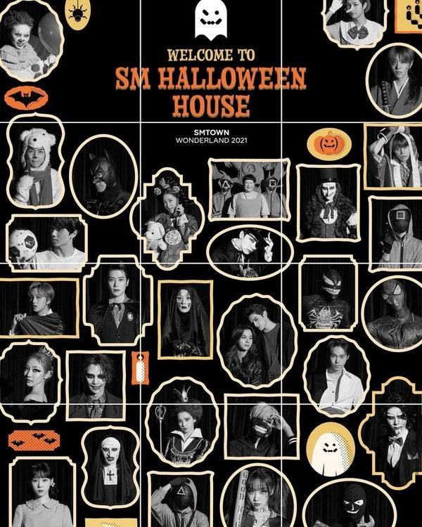
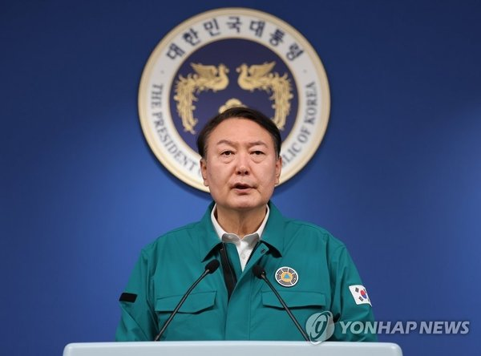
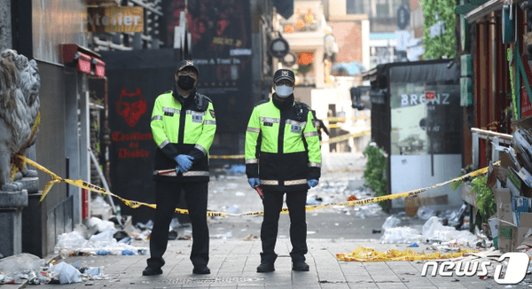

Sau 'thảm kịch Itaewon', SM chính thức hủy bỏ sự kiện Halloween
Chủ nhật, 30/10/2022 09:16 (GMT+7)
Quyết định này vừa được đưa ra sau khi lễ hội Halloween sớm tại Itaewon biến thành thảm kịch do hơn 100.000 người giẫm đạp lên nhau.
Vào ngày 30/10 (theo giờ Hàn Quốc), SM Entertainment bất ngờ thông báo đến người dùng trên nền tảng fandom của mình là KWANGYA CLUB về quyết định huỷ sự kiện Halloween, cùng với đó những hình ảnh và bài viết liên quan cũng đã được gỡ khỏi trang chủ của công ty này.
"Chương trình phát sóng trực tiếp "SMTOWN WONDERLAND 2022", dự kiến được phát trực tiếp miễn phí thông qua nền tảng toàn cầu Beyond LIVE, đã bị hủy". Do bản thân sự kiện đã không thể diễn ra nên thảm đỏ cũng không có livestream. Mong các bạn thông cảm" - nội dung thông báo viết.
Việc hủy bỏ lịch trình đột ngột này từ SM Entertainment được cho là đưa ra sau hậu quả của vụ thảm kịch Itaewon diễn ra vào đêm 29/10 trước thềm Halloween.
Theo tin mới nhất vào lúc 9h sáng nay (KST) đã có 151 người chết, 82 người bị thương (trong đó có 19 người bị thương nặng, 63 người bị thương nhẹ) sau vụ giẫm đạp nhau tại con dốc nhỏ ở Itaewon, Seoul. Cơ quan cứu hỏa dự đoán có thể có thêm người chết trong số 19 người bị thương nặng. Công tác tìm kiếm đã kết thúc và sẽ tập trung xác định nguyên nhân vụ tai nạn trong thời gian tới. Thủ tướng Hàn Quốc vào sáng nay cũng đã thông báo quốc tang cho đến khi giải quyết xong vụ việc.
Lễ hội Halloween biến thành thảm kịch khiến ít nhất 150 người chết ở Itaewon
Tổng thống Hàn Quốc thông báo quốc tang bắt đầu từ hôm nay
Trong khi đó, "SMTOWN WONDERLAND 2022" ban đầu được lên kế hoạch trở thành bữa tiệc Halloween ngoại tuyến đầu tiên của công ty kể từ khi bùng phát COVID-19.